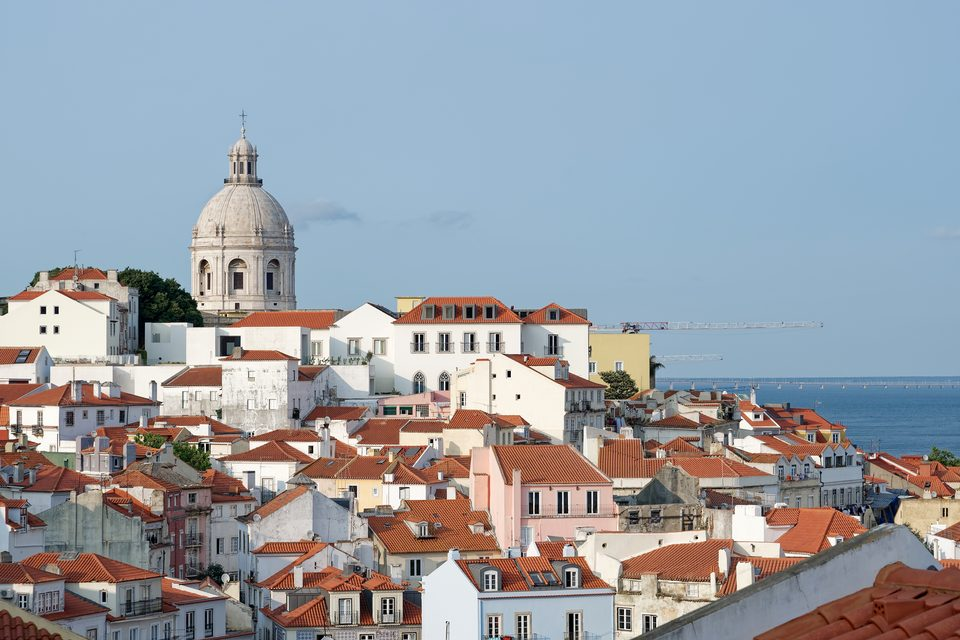

Portugal · Lisbon
Alfama audio guide
Lisbon · offline · plays as you arrive
This guide is free
Every recorded stop plays here.
A walking guide through Alfama, the old hillside neighbourhood above Lisbon’s riverfront. It works offline, in 10 languages, and plays as you arrive.
Stops
- 1
Lisbon Cathedral
In front of Lisbon Cathedral, the Sé, looking up at its two towers and rose window.
Play0:00 / –:––Read along
Lisbon Cathedral, the Sé, has the face of a fortress: two square towers, battlements along the top, and between them a round rose window over the main door.
It is considered the oldest church in the city. Its story begins in 1147, the year the Portuguese king Afonso Henriques took Lisbon from the Moors with the help of crusaders sailing to the Holy Land. One of those crusaders, an Englishman, Gilbert of Hastings, was named bishop of the city, and work began on a cathedral, it is believed on the site of the city's main mosque. Its plan is a Latin cross, with a nave and two aisles and a gallery running above the aisles.
Later kings added in the Gothic style. In the reign of King Dinis a cloister was begun behind the church. Afonso the Fourth, who reigned from 1325 to 1357, had the east end rebuilt as a family burial place and as a place for pilgrims, who came to honour the relics of Saint Vincent, the patron saint of Lisbon. It is an ambulatory, a walkway curving behind the high altar with chapels opening off it, and the cathedral and the heritage directorate both describe it as the only Gothic ambulatory in a Portuguese cathedral. In 1498 Queen Leonor, the widow of King John the Second, founded in a chapel of the cloister the brotherhood of Our Lady of Mercy, the Misericórdia, which grew into a charity with branches across Portugal.
The great earthquake of 1755 brought down the Gothic main chapel, the south tower and the roof of the nave. In the early twentieth century the cathedral was restored: later additions were removed, the nave vault and the rose window were rebuilt, and the church was given back a medieval look. It was formally inaugurated again in 1940.
- 2
Santa Luzia Viewpoint and Alfama
On the terrace of the Santa Luzia viewpoint, looking down over the rooftops of Alfama to the river.
Play0:00 / –:––Read along
From the Santa Luzia viewpoint, Alfama tumbles down the hillside to the river: a maze of red roofs, white church towers and narrow lanes. Among them rise the dome of Santa Engrácia and the twin white towers of the church of São Miguel.
Alfama is one of the oldest districts of Lisbon. Its name is generally taken to come from the Arabic al-hamma, hot springs or baths, after the warm mineral springs that rise in the area. The walled Moorish town stood on this hill, and stretches of its old wall, known as the Cerca Velha or Moorish Wall, survive close to this terrace. It was the wall that Afonso Henriques faced when he took Lisbon in 1147.
Over the centuries Alfama became a neighbourhood of fishermen, sailors and working families. Much of its old pattern of lanes, steps and small squares survived the great earthquake of 1755, which flattened the lower city.
Alfama is closely tied to fado, the song of longing that grew up in Lisbon's old quarters, and small fado houses are scattered along its lanes. The walls of the castle crown the hill above.
- 3
São Vicente de Fora
In front of the church of São Vicente de Fora, with its white façade and two towers, on the hill east of the castle.
Play0:00 / –:––Read along
The church of São Vicente de Fora rises in a tall, sober white façade, with a tower at each side.
Its name means Saint Vincent Outside the Walls. During the siege of Lisbon in 1147, the king, Afonso Henriques, is said to have promised that if he took the city he would build a monastery to Saint Vincent, the patron saint of Lisbon. It was founded that same year outside the city walls and given to Augustinian canons, who lived here until 1834.
The present building is far later. After 1580 Portugal passed to the Spanish crown, and Philip the Second of Spain, king of Portugal as Philip the First, ordered the monastery rebuilt on a grand scale. The plans are attributed to the Spaniard Juan de Herrera, who also designed the Escorial, and the Italian Filippo Terzi guided the building work. The Portuguese architect Baltazar Álvares later directed it and is credited with the façade. The church went up from the 1580s into the early 1600s, in the sober late Renaissance style called Mannerism, and the monastery itself describes it as one of the first examples of Mannerism in Portugal.
The earthquake of 1755 destroyed the church's vault and dome. After the rebuilding, the sculptor Joaquim Machado de Castro designed the monumental canopy over the high altar.
The monastery's cloisters are lined with blue and white tile panels of the eighteenth century. Among them are panels that tell the fables of La Fontaine.
In 1834 the religious orders were dissolved and the canons left. In the 1850s, after the death of Queen Maria the Second, her widower, King Ferdinand the Second, had the royal pantheon of the House of Braganza, the last dynasty to rule Portugal, moved into the canons' old dining hall.
- 4
National Pantheon
Below the great white dome of the National Pantheon, the church of Santa Engrácia.
Play0:00 / –:––Read along
The church of Santa Engrácia is a cross of white stone with corner towers, crowned by a high white dome. It is the National Pantheon of Portugal.
In 1568 the Infanta Maria, a daughter of King Manuel the First, who lived near here, won permission to create a new parish, named for the martyr Saint Engrácia, and a church was begun for it a few years later. After a violent storm in 1681 brought down part of its walls, a new church to a bold new design, by the architect João Antunes, was begun in 1682. Then the work went on, and on. When Antunes died in 1712 the church still had no roof and no interior finish, and the great central dome would have to wait until the twentieth century. In Portuguese, "obras de Santa Engrácia", the works of Santa Engrácia, still means a job that never ends.
In 1916 the young republic set the unfinished church aside to become the National Pantheon, the resting place of the country's great figures. Meanwhile the army used the building as a store, and from 1910 as a boot factory, until 1954. Only in 1966 were the works finally completed, almost three centuries after the first stone of Antunes's church was laid.
Inside, the floor and walls are patterned in coloured marble. In the nave, six memorials honour great figures of Portuguese history, among them the poet Luís de Camões, the navigator Vasco da Gama and Prince Henry the Navigator; these are tributes only, and none of the six lies here. The tombs themselves stand at the corners of the building. Among those buried here are the writer Almeida Garrett, the fado singer Amália Rodrigues and the footballer Eusébio, along with several presidents of the republic.
- 5
Feira da Ladra
On the Campo de Santa Clara, the open ground between São Vicente de Fora and the Pantheon where the Feira da Ladra is held.
Play0:00 / –:––Read along
The Campo de Santa Clara is the long open ground where Lisbon's long-established flea market, the Feira da Ladra, spreads out its stalls of second-hand goods, old objects and crafts.
Its roots go back to the thirteenth century, when a market was held near the castle. By the sixteenth century it was being held down in the Rossio square. The name Feira da Ladra appears in an official city order as early as 1610.
After the earthquake of 1755 the fair came to be held on what is now the Praça da Alegria. In the nineteenth century it was at the Campo de Santana, and in 1882 it settled here, on the Campo de Santa Clara.
At first the fair was held only on Tuesdays. Since 1903 it has been held on Saturdays as well.